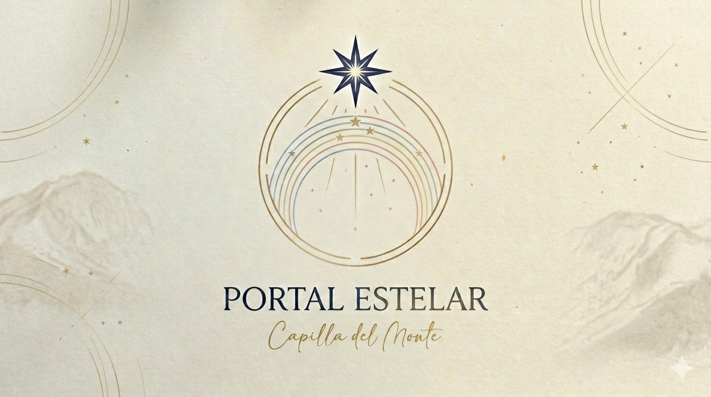
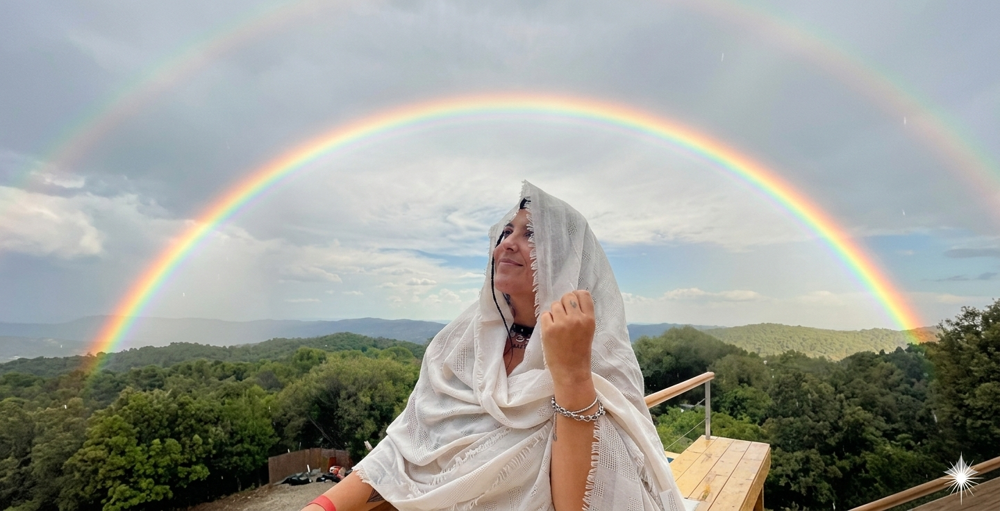
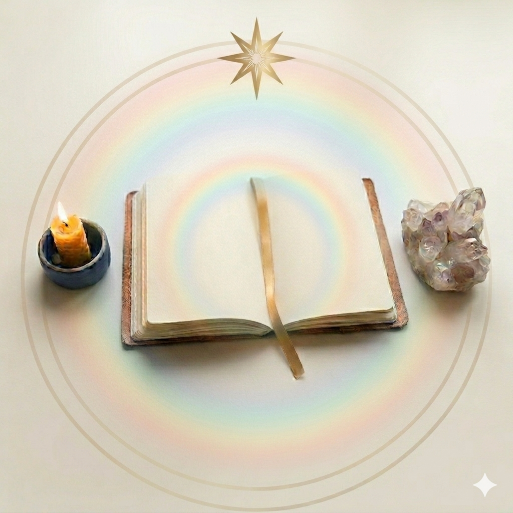
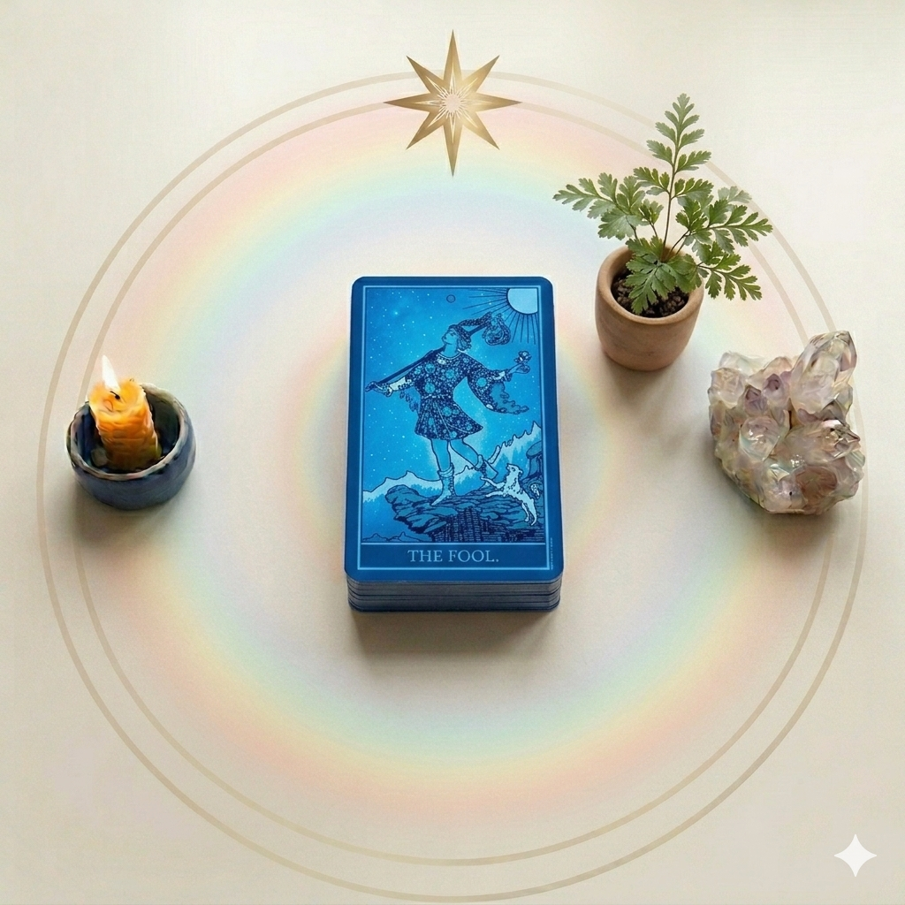
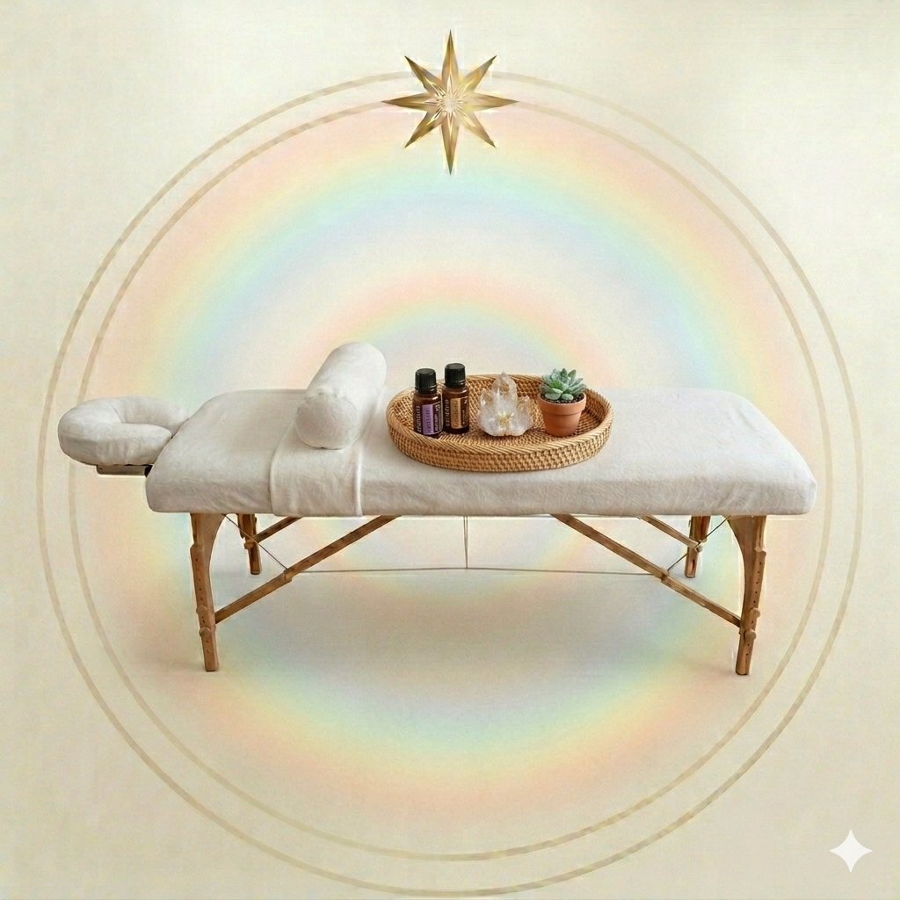

"Un espacio de elevación, reconexión y paz."
Portal Estelar nace como un faro de frecuencia, diseñado para quienes buscan silenciar la mente y encender el espíritu. Es una invitación a dejar atrás lo que ya no vibra contigo y abrirte a la expansión de tu propia luz.

Mi nombre es Sol y me defino como una eterna aprendiz de los misterios de la existencia.
Desde hace más de 11 años estudio terapias complementarias. En 2014, Capilla del Monte transformó mi vida, llevándome a renunciar a lo convencional para iniciar una búsqueda profunda a través del viaje y la fe.
Hoy, establecida en estas tierras, mi alma ha encontrado su lugar. Mi propósito es volcar esa experiencia para acompañarte a cocrear tu propia realidad con conciencia y amor.
"Elevar la frecuencia es el primer paso para recordar quiénes somos."

Accede a la biblioteca de tu alma para obtener respuestas, liberar patrones y recibir la guía amorosa de tus maestros en este momento de tu vida.
$55.000
Reservar Sesión
Utilizamos la simbología para observar tu presente, desbloquear potenciales y tomar decisiones desde tu consciencia superior.
$33.000
Reservar Sesión
Un encuentro profundo donde el cuerpo físico y el campo sutil se liberan. Ideal para soltar tensiones acumuladas y restaurar tu flujo vital de energía.
$44.000
Solicitar TurnoEstoy preparando este recurso práctico para acompañarte a sintonizar con la frecuencia de la gratitud. Muy pronto podrás descargarlo aquí mismo.
Próximamente